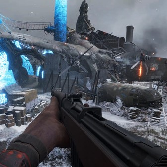
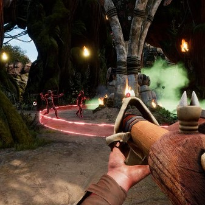
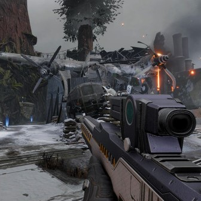

Runtime Level Editor for HisteraGame - Unity C#



The aim of this project was to create a PC Level Editor to build and share HisteraGame Levels. The main features that I contributed to include:
Tools and Systems
- Move, Rotate, Scale, Duplicate and Delete tools with its corresponding gizmos.
- Grid system with different sizes to use with Move, Rotate, Scale tools.
- Snap to ground.
- Undo Redo system with the command pattern.
- Tooltip and Toast system.
- Warning and Errors system with visual feedback.
- Save system.
- Settings system.
- Game rules system(load rules, assets or specific color palette depending on the game mode).
Camera
- Camera and viewport navigation including perspective to orthographic transitions, objects focus and other advanced behaviors.
- Navigation gizmo.
{kind=link}
Assets
- Asset Bar/Selector with different sections and categories with drag and drop and search functionality.
- Multiple object selection and manipulation.
Assets hierarchy
- Hierarchy synced with the objects in the scene.
- Group/Ungroup.
- Expand/Collapse groups.
- Rename and reorder items.
- Multiple selection.
- Hierarchy resiz.e
User Interface
- Used a MVVM framework to implement the UI.
- UI Skin manager to control all the UI elements with a color palette.
Launcher and Community Menu
- API data fetching to download and share levels.
- Create new level or new level from template.
- Load existing level in edit or view mode.
- Duplicate and rename level.
- Save level as favorite.
- Publish or Update level.
After this integration an integration of this editor with another game started, including new tools and new functionalities.